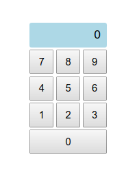

Předchozí jak to jde nazdarek lekce nám ukázala, jak můžeme pomocí JavaScriptu měnit obsah stránky. K plně interaktivním stránkám však potřebujeme také reagovat na akce uživatele. Chceme například něco zobrazit, když uživatel klikne na tlačítko, umožnit mu vložit nějaký vstup do textového políčka a tak dále. K tomu potřebujeme porozumět takzvaným událostem. K tomu, abychom uměli dobře používat události se však také potřebujeme dozvědět něco málo více o tom, jak fungují funkce.
¶ Funkce vyššího řádu
Z předchozí lekce už víme, že funkce jsou hodnoty podobně jako čísla, řetězce nebo DOM elementy a viděli jsme, že je díky tomu můžeme ukládat do proměnných. To je však pouze začátek toho, co je možné s funkcemi dělat a nyní se pustíme králičí norou malinko hlouběji. Funkce je totiž zcela rovnoprávná hodnota, a tak ji můžeme nejen uložit do proměnné, ale také předat jiné funkci na vstup. Můžeme tedy funkci předat jinou funkci. Taková myšlenka může ze začátku působit dost odvážně a možná až děsivě. Postupujme tedy pomaličku a s rozvahou.
¶ Chytřejší kalkulačka
Vraťme s na chvíli k příkladu kalkulačka z minulé lekce. Zadání bylo vytvořit funkci calc, která spočítá výsledek operace zadané jako řetězec. Přímočaré řešení mohlo vypadat například takto.
const calc = (num1, op, num2) => {
if (op === '+') {
return num1 + num2;
}
if (op === '-') {
return num1 - num2;
}
if (op === '*') {
return num1 * num2;
}
if (op === '/') {
return num1 / num2;
}
};
Možná si říkáte, jestli by tato funkce nešla napsat nějak šikovněji a úsporněji. Například předat funkci operaci tak nějak přímo a naše funkce by ji jen vykonala. Něco ve stylu
> calc(2, +, 3)
5
Pokud přemýšlíte tímto směrem, jste na správné stopě. Jen na to musíme jít trošku od lesa. Nejprve si vyrobíme funkce, které provádějí jednotlivé operace.
const plus = (num1, num2) => num1 + num2;
const minus = (num1, num2) => num1 - num2;
const times = (num1, num2) => num1 * num2;
const divide = (num1, num2) => num1 / num2;
Jelikož každá takováto funkce je hodnota, můžeme ji předat jako vstup do funkce calc. Ta pak obdrženou funkci pouze zavolá.
const calc = (num1, op, num2) => op(num1, num2);
Funkci calc pak použijeme velmi přímočaře.
> calc(2, plus, 3)
5
> calc(4, times, 5)
20
Ze začátku se vám možná z takovýchto triků malinko točí hlava. Projděme si proto následující fakta, abychom získali zpět ztracenou rovnováhu.
- V parametru
opnyní není řetězec, jako tomu bylo dříve, nýbrž funkce. - Funkce
calcfunkciopzavolá, aniž by věděla, co je tato funkce vlastně zač. Prostě vezme cokoliv, co jí dáme na vstup, a zavolá to. - Když voláme funkci
calca na vstupu je například funkceplus, všimněte si, že funkciplusnevoláme. Za proměnnouplusnejsou kulaté závorky. Funkci pouze předáváme jako hodnotu, podobně, jako bychom předávali číslo, řetězec apod.
Funkcím, které berou jiné funkce jako vstup nebo vracejí funkce jako svůj výstup, se v teorii programování říká funkce vyšších řádů higher order functions . Je to velmi důležitý koncept, který má spoustu využítí a budeme jej používat v mnoha různých situacích.
¶ Malé cvičení
Abychom byli mezi funkcemi vyšších řádů jako ryba ve vodě, je potřeba trošku procvičit tento nový styl přemýšlení. Projděte si následující výrazy a zkuste předpovědět, jaký bude výsledek.
> const foo = (f, x) => 3 * f(x + 2);
> foo(Math.round, 3.74)
?
> foo((a) => a ** 2, 3)
?
> foo((x) => 17 % x, 5)
?
> const foo = (g, x, y) => g(x, y) + g(y, x);
> foo(Math.max, 5, 10)
?
> foo((a, b) => 2 * (a - b), 2, 5)
?
> foo((x, y) => x + ' ' + y, 'petr', 'pavel')
?
¶ Zpoždění a časovače
Jedna ze situací, kdy se nám velmi hodí funkce vyššího řádu, je chvíle, kdy chceme v JavaScriptu provedení nějaké funkce pozdržet nebo její volání pravidelně opakovat. Vzpomeňte si na příklad kvíz z minulé lekce. Představme si, že chceme, aby uživatel měl na každou odpověď nějaký časový limit. Po zobrazení otázky chceme počkat 5 vteřin a poté vypsat něco jako “čas vypršel”. Vyrobíme si tedy funkci, která vypisuje naši zprávu, zatím pro jednoduchost pouze do konzole.
const timeIsUp = () => {
console.log('Čas vypršel');
};
Tuto funkci chceme spustit pět vteřin poté, co se otevře naše stránka. K takovému účelu JavaScript poskytuje funkci setTimeout.
Ta jako svůj vstup bere funkci a počet milisekund, které mají uplynout
před tím, než se tato funkce zavolá. Použití tak vypadá následovně.
setTimeout(timeIsUp, 5000);
Všimněte si, že setTimeout je funkce vyššího řádu, neboť bere jako svůj první vstup funkci. Opět vidíme, že funkci timeIsUp nevoláme my, ale zavolá ji až JavaScript runtime po uplynutí 5000 milisekund. Celý program pak vypadá takto.
'use strict';
const timeIsUp = () => {
console.log('Čas vypršel');
};
setTimeout(timeIsUp, 5000);
Pokud chceme, aby se nějaká funkce volala opakovaně, například každých pět vteřín, stačí místo setTimeout použít setInterval.
setInterval(timeIsUp, 5000);
¶ Anonymní funkce
V předchozíme programu je vidět, že funkci timesIsUp
používáme pouze jednou. Je proto trochu zbytečné pro ni vytvářet
proměnnou. Funkci můžeme vytvořit přímo na místě, kdy ji používáme.
'use strict';
setTimeout(() => {
console.log('Čas vypršel');
}, 5000);
Pokud nějakou funkci vytváříme přímo takto na místě místo toho, abychom ji nejdříve uložili do proměné, říkáme, že taková funkce je takzvaně anonymní anonymous . V teorii programování se místo pojmu anonymní funkce používá pojem lambda funkce lambda functions . V JavaScriptu se tento pojem až tolik nepoužívá, zato v jazyce Python je to zažitý termín.
Program napsaný pomocí lambda funkcí vám možná přijde hůř k přečtení. Anonymní funkce se ovšem v JavaScriptu používají zcela běžně a jakmile si na tento způsob zapisu zvyknete, budete jej radostně používat také.
Podobně jako u funkce setTimout, anonymní funkci můžeme předat i naší známé funkci calc. Schválně zkuste odhanout, co bude výsledkem následujícího výrazu a proč.
> calc(13, (x, y) => x % y, 7)
?
¶ Cvičení - funkce vyššího řádu
¶ Jednoduché funkce vyšších řádů
- Vytvořte funkci jménem
apply, která jako svoje parametry bere funkcifa vstupx. Funkceapplyvrátí výsledek funkcefzavolané na vstupx. Zavolejte funkciapplys více různými vstupy a sledujte výsledky. - Napište funkci
max, která jako svoje parametry bere dvě funkcef,ga vstupy. Funkcemaxzavolá obě tyto funkce se vstupemya vrátí větší z obou výsledků.
¶ Minutka
Stáhněte si základ aplikace pro kuchyňskou minutku. Využijte funkci setTimeout ke splnění následujících úkolů.
- Zařiďte, aby minutka začala zvonit za pět vteřin po otevření
stránky. Zvonění zařídíte tak, že k elementu budíku přídáte CSS třídu
alarm--ring. - Nechte uživatele skrze
promptzadat kolik vteřin má uplynout než minutka začne zvonit. - Můžete zařídit i spuštění zvuku. Stačí ze stránky vybrat
audioelement a zavolat na něm metoduplay. Abyste zvuk slyšeli, musíte po zadání času na stránku kliknout. Prohlíč Chrome totiž brání stránkam přehrávat audio či video dokud uživatel se stránkou nějak neinteragoval. Tento nedostatek odstraníme na konci lekce.
¶ Události
Aby naše stránky mohly být skutečně interaktivní, potřebujeme být schopni reagovat na akce, které uživatel na stránce provádí - klikání na tlačíka, stiknutí kláves, scrollování, pohyb myší apod. Vždy, když některá z těcho akcí na stránce nastane, říkáme, že nastala určitá událost event . JavaScript reprezentuje takovou událost jako speciální typ hodnoty podobně jako číslo, řetězec nebo funkci. Událost tedy můžeme uložit do proměnné nebo poslat nějaké funkci jako vstup. Událost obsahuje vlastnosti a metody, které popisují co se přesně stalo, například jaká klávesa byla zrovna stisknuta, kde na obrazovce bylo kliknuto a spoustu dalších užitenčných informací.
Abychom mohli na události reagovat, JavaScriptu nám umožňuje ke každé události, která nás zajímá, připojit funkci, která se zavolá ve chvíli, kdy daná událost nastane. Takové funkci často říkáme posluchač události event listener . Můžeme si představit, že JavaScirpt runtime pečlivě naslouchá všem možným událostem a volá k nim přiřazené funkce. Ve chvíli, kdy JavaScript runtimu tuto funkcí volá, předá jí na vstup událost, která zrovna nastala. Taková funkce tedy může vypadat například takto.
const changeTitle = (event) => {
const h1Elm = document.querySelector('h1');
h1Elm.textContent = 'Baf!';
};
Nyní zařídíme, aby se tato funkce zavolala ve chvíli, kdy stiskneme tlačítko. Vytvoříme si tedy jedndouchou stránku s tlačítkem a nadpisem.
<body>
<h1>Nadpis</h1>
<button>Zmáčkni mě</button>
<script src="index.js"></script>
</body>
Nejdříve tlačítko z dokumentu vybereme a poté na něm zavoláme speciální metodu addEventListener. Ta očekává název události a funkci, která se má spustit, když událost nastane. V našem případě se událost jmenuje click a naše funkce je changeTitle. Celý program tedy bude vypadat takto.
'use strict';
const changeTitle = (event) => {
const h1Elm = document.querySelector('h1');
h1Elm.textContent = 'Baf!';
};
const btnElm = document.querySelector('button');
btnElm.addEventListener('click', changeTitle);
¶ Nástrahy
S událostmi přichází několik nástrah, na které když si nedáme pozor, naše stránka nejen že nebude fungovat, ale nevyhodí ani žádnou chybu. V takové situací může být těžké odhalit, v čem přesně je zakopaný pes. Tyto nástrahy se často rády objevjí těsně před deadlinem odevzdání projektu a jejich hektické řešení pak má neblahý vliv na naše zdraví a zdraví našich kolegů.
Nástraha první spočítá v předávání funkce changeTitle. Všimněte si opět toho, že používáme funkci changeTitle jeko hodnotu a předáváme ji jako vstup metodě addEventListener. Nikde v našem kódu funkci sami nevoláme. Zavolá ji až JavaScript runtime ve chvíli, kdy na tlačíku nastane událost click. Častou začátečnickou chybou je pokušet se funkci zavolat sami.
btnElm.addEventListener('click', changeTitle());
V tomto případě se funkce changeTitle zavolá už ve chvíli, kdy voláme metodu addEventListener. Té se pak jako druhý vstup předá výsledek volání funkce changeTitle, nikoliv funkce samotná. Jelikož changeTitle nic nevrací (přesněji řečeno, vrací undefined), k události click
se žádný posluchač nepřipojí. Naše tlačítko tedy nebude fungovat. Co
nás může zmást je to, že takováto stránka nevyhodí žádnou chybu. Náš
JavaScript kód totiž funguje jak má. Jen jsme ho napsali tak, že dělá
něco jiného než chceme. JavaScript runtime však nemůže telepaticky
nahlížet do našich hlav aby věděl, co doopravdy chceme. Prostě dělá to,
co jsme mu řekli.
Nástraha druhá spočívá v názvech událostí. To jsou obyčejné řetězce jak je známe už z první lekce. Není vůbec těžké udělat v názvu události překlep, obzvlášť, pokud je název delší, nebo nejsme tolik zdatní v angličtině.
btnElm.addEventListener('clik', changeTitle());
btnElm.addEventListener('keypres', changeTitle());
JavaScript runtime bohužel nekontroluje, zda událost clik nebo keypres
může skutečně nastat nebo nikoliv. Jenoduše k tomuto názvu připojí
posluchače a o nic dalšího se nestará. Jelikož takto pojmenované
události nikdy nenastanou, naše stránka nebude fungovat a opět také
nenastane žádná chyba. Z hlediska runtimu je jako v předchozím případě
všechno v naprostém pořádku.
Když tedy pracujete s událostmi, vždy si dobře zkontrolujte, že jste jméno události napsali správně a že také správným způsobem předáváte posluchače.
¶ Vlastnosti událostí
Všimněte si, že jsme parametr event uvnitř naší funkce changeTitle
zatím k ničemu nepoužili. V tomto parametru je uložena hodnota, která
obsahuje informace o události, která nastala. Najdeme zde například tyto
vlastnosti
event.target- DOM element, na kterém událost nastala. V našem případě je to element tlačítka.
event.shiftKey,event.altKey,event.ctrlKey- Tyto vlastnosti obsahují pravdivostní hodnoty, které udávají, zda byla při kliknutí stisknuta klávesa Alt, Shift nebo Ctrl.
¶ Kalkulačka
Vlastnost target je jedna z vůbec nejdůležitějších. Díky
ní se můžeme dostat z mnoha jinak svízelných situací. Představte si
například, že chceme naprogramovat jednoduchou webovou kalkulačku.
Pravděpodobně bychom začali s číselníkem jako na obrázku.

Nejdříve budeme potřebovat HTML část naší malé aplikace.
<div class="numpad">
<div class="display">0</div>
<button id="btn7" class="num-btn">7</button>
<button id="btn8" class="num-btn">8</button>
<button id="btn9" class="num-btn">9</button>
<button id="btn4" class="num-btn">4</button>
<button id="btn5" class="num-btn">5</button>
<button id="btn6" class="num-btn">6</button>
<button id="btn1" class="num-btn">1</button>
<button id="btn2" class="num-btn">2</button>
<button id="btn3" class="num-btn">3</button>
<button id="btn0" class="num-btn num-btn--wide">0</button>
</div>
Nyní budeme chtít, aby při stisku každého tlačíka přibyla na displaji kalkulačky správná cifra. První řešení, které nás může napadnout, je dát každému tlačíku na kliknutí jinou funkci, která nastaví správnou cifru.
'use strict';
const displayElm = document.querySelector('.display');
document.querySelector('#btn0').addEventListener('click', (event) => {
displayElm.textContent += '0';
});
document.querySelector('#btn1').addEventListener('click', (event) => {
displayElm.textContent += '1';
});
document.querySelector('#btn2').addEventListener('click', (event) => {
displayElm.textContent += '2';
});
document.querySelector('#btn3').addEventListener('click', (event) => {
displayElm.textContent += '3';
});
document.querySelector('#btn3').addEventListener('click', (event) => {
displayElm.textContent += '3';
});
document.querySelector('#btn4').addEventListener('click', (event) => {
displayElm.textContent += '4';
});
document.querySelector('#btn5').addEventListener('click', (event) => {
displayElm.textContent += '5';
});
document.querySelector('#btn6').addEventListener('click', (event) => {
displayElm.textContent += '6';
});
document.querySelector('#btn7').addEventListener('click', (event) => {
displayElm.textContent += '7';
});
document.querySelector('#btn8').addEventListener('click', (event) => {
displayElm.textContent += '8';
});
document.querySelector('#btn9').addEventListener('click', (event) => {
displayElm.textContent += '9';
});
Tento kód sice bude fungovat, ale už od pohledu je strašlivě ukecaný.
Všech naších deset funkcí dělá v podstatě totéž. Liší se pouze v jednom
znaku. Mnohem šikovnější by bylo mít pouze jednu funkci, která se
připojí na každé tlačítko. Tato funkce ale musí nějak zjistit, jakou
cifru má na displej připojit. Zde můžeme mazaně využít toho, že kýženou
cifru má každé tlačíko jako svůj textContent. A díky vlastnosti event.target může naše funkce snadno zjistit, na které tlačíko bylo zrovna kliknuto. Výsledný kód pak bude vypadat takto.
'use strict';
const btnClick = (event) => {
const displayElm = document.querySelector('.display');
displayElm.textContent += event.target.textContent;
};
document.querySelector('#btn0').addEventListener('click', btnClick);
document.querySelector('#btn1').addEventListener('click', btnClick);
document.querySelector('#btn2').addEventListener('click', btnClick);
document.querySelector('#btn3').addEventListener('click', btnClick);
document.querySelector('#btn4').addEventListener('click', btnClick);
document.querySelector('#btn5').addEventListener('click', btnClick);
document.querySelector('#btn6').addEventListener('click', btnClick);
document.querySelector('#btn7').addEventListener('click', btnClick);
document.querySelector('#btn8').addEventListener('click', btnClick);
document.querySelector('#btn9').addEventListener('click', btnClick);
Takový kód už je mnohem hezčí. Kdybychom ještě navíc uměli cykly, které nás již brzo čekají, dokázali bychom jej zkrátit ještě výrazněji.
¶ Další druhy událostí
Jak už bylo řečeno, událostí je mnoho typů a mohou nastat na různých elementech. My jsme zatím reagovali na kliknutí na tlačítko. Kliknutí však může nastat na jakémkoliv elementu. Takto například zareagujeme na kliknutí na celé stránce.
document.addEventListener('click', (e) => console.log('klik'));
Takto přidáme posluchače události k celé naší stránce. Na celé stránce také můžeme použít událost scroll, která nastave pokaždé, když uživatel na stránce zascrolluje.
document.addEventListener('scroll', (e) => console.log('skrol'));
Často se nám tako mohou hodit události keydown a keyup. Událost keydown nastane, když uživatel stiskne nějakou klávesu. Událost keyup nastane, když uživatel klávesu uvolní. To je velmi šikovné, protože pokud uživatel drží zmáčknutou nějakou klávesu, událost keydown nám bude chodit pořád dokola. Naopak událost keyup přijde vždy pouze jednou ve chvíli, kdy uživatel klávesu uvolní.
Pokud chceme zjistit, jaká klávesa byla stisknuta, musíme znát její kód. Kódy kláves snadno najdete na keycode.info. Zjistíme tak například, že klávesa Enter má kód 13. Takto pak na stránce můžeme zareagovat na stisknutí Enter.
document.addEventListener('keyup', (event) => {
if (event.keyCode === 13) {
console.log('enter');
}
});
Nebo na stisknutí Ctrl+C.
document.addEventListener('keyup', (event) => {
if (event.keyCode === 67 && event.ctrlKey) {
console.log('Ctrl+C');
}
});
Událostí, na které můžete na stránce reagovat je nepřeberné množství. Seznam všech událostí si můžete pro inspiraci prohlédnout na stránkách MDN.
¶ Cvičení - Události
¶ Žárovka
Stáhněte si základ stránky, která zobrazuje obyčejnou žárovku.
- Pomocí JavaScriptu zařiďte, aby se při kliknutí na element žárovky k tomuto elementu přidala CSS třída
bulb--on. Žárovka by se takto měla rozsvítit. - Vylepšete program tak, aby na druhé kliknutí žárovka opět zhasnula. Opětovným klikáním na žárovku ji tak můžeme rozsvěcovat a zhasínat.
¶ Kostka
Stáhněte si základ stránky, která zobrazuje hrací kostku. Doplňte do stránky JavaScriptový program, který zařídí, že když uživatel zmáčkne na stránce mezerník, na kostce se zobrazí číslo o jedna vyšší. Po šestce zobrazte opět jedničku.
Rozumným postupem je vytvořit si proměnnou side, která
bude obsahovat číslo strany kostky. Tuto proměnnou můžete vždy při
stisknutí mezerníku navýšit o jedna a z této hodnoty zkonstruovat
řetězec pro atribut src.
¶ Povinné čtení a doma
¶ Rušení časovačů
Pokud spustímě nějaký časovač, často jej také chceme po určité době zrušit. Vyrobme například časovač, který každé 3 vteřiny řekne ‘ahoj’.
const timerId = setInterval(() => console.log('ahoj'), 3000);
Všimněte si, že tentokrát jsme si uložili hodnotu, kterou funkce setInterval
vrací. Tato hodnota je číslo, které identifikuje náš časovač. Pokud
kdykoliv chceme, aby časovač přestal běžet, stačí zavolat funkci clearInterval s identifikátorem našeho časovače.
clearInterval(timerId);
Takto se dá předčasně zrušit i časovač vyrobený pomocí setTimeout. Musíme však použít metodu clearTimeout.
const timerId = setTimeout(() => console.log('ahoj'), 5000);
setTimeout(() => clearTimeout(timerId), 2000);
Tento kód zařídí, že první časovač vůbec neproběhne. Jeho čas je nastaven na 5 vteřin. Už za dvě vteřiny se však spustí druhý časovač, který jej nekompromisně vypne dřív, než stačí cokoli udělat.
¶ Vstup pomocí textových políček
Poslední věc, která nám chybí pro příjemnou interakci s uživatelem, je získávat vstup jinak, než pomnocí funkce prompt. Naštěstí se vším, co už umíme je to už jen malý krůček. Stačí kdekoliv na stránce použít textové políčko, například takto.
<input id="my-input" type="text" />
Kdykoliv chceme získat text, který uživatel do políčka vepsal, stačí nám toto políčko vybrat pomocí querySelector a použít vlastnost value.
const inputElm = document.querySelector('#my-input');
const text = inputElm.value;
Stejně jako vlastnost textContent, i vlastnost value
je jak pro čtení, tak pro zápis. Můžeme tak řetězec z políčka přečíst,
ale také jej políčku nastavit. Všimněte si, že schválně používám slovo
řetězec. Stejně jako u funkce prompt i zde platí, že vlastnost value je vždy řetězec. Je tedy opět nutné mít se na pozoru, chceme-li od uživatele například číslo, a provést nezbytnou konverzi.
const inputElm = document.querySelector('#my-input');
const num = Number(inputElm.value);
Od této chvíle navždy se vzdáváme funkce prompt a budeme už používat pouze textová políčka. Ta můžeme hezky nastylovat, aby dobře zapadla do grafiky našich stránek.
¶ Doporučené úložky na doma
¶ Hledání pomocí predikátu
Napište funkci find, která jako svůj první parametr očekává funkci pred mající jeden vstup a vracející boolean. Takovým funkcím se občas říká predikáty. Nechť funkce find dále má tři další parametry x, y, z. Funkce find postupně volá funkci pred s těmito parametry a vrátí tu hodnotu, u které funkce pred poprvé vrátí true. Pokud funkce pred nevrátí true ani na jednom z parametrů x, y, z, funkce find nechť vrátí hodnotu null. Tato hodnota se často použivá jako synonymum pro slovo “nic”.
Příklad použití:
> find((a) => a % 2 === 0, 1, 4, -5)
4
> find((a) => a < 0, 1, 4, -5)
-5
> find((a) => a.length > 5, 'petr', 'pavel', 'jana')
null
¶ Minutka 2
Stáhněte si základ aplikace pro vylepšenou kuchyňskou minutku.
Umožněte uživateli zadat počet vteřin skrze připravené textové poličko. K získání hodnoty z políčka použijte vlastnost value. Nezapomeňte obsah políčka zkonvertovat na číslo. Minutku spusťte tlačítkem Start.
Zařiďte, aby minutka správně odpočítávala vteřiny a začala zvonit ve chvíli, kdy dosáhne nuly. Pokud si věříte, zkuste celý program napsat rovnou bez nápovědy. Pokud malinko ztrácíte půdu pod nohama, následujte tyto kroky.
- Vytvořte si proměnou
time, do které uložíte počáteční počet vteřin zadaný uživatelem. - Při kliknutí na Start nastavte časovač pomocí
setInterval. Ten se bude opakovat každou vteřinu a pokaždé sníží hodnotu v proměnnétimeo jedna. - Jakmile proměnná
timedosáhne nuly, zapněte zvonění a zrušte časovač aby nezačal počítat do mínusu.
¶ Kalkulačka
Naše úvodní povídání o funkcích vyššího řádu přímo vybízí k tomu, abychom dotáhli do konce aplikaci kalkulačka. Naprogramovat kalkulačku, aby skutečně fungovala dle běžných očekávání není tak přímočaré, jak by se na první pohled mohlo zdát. Prohlédněte si toto video, které ukazuje, jak klasická kalkulačka skutečně funguje. Povšimněte si především následujících funkčností.
- Displej kalkulačky slouži pro vstup i výstup. Musíme si tedy dávat pozor, kdy jej používáme pro vstup a kdy pro výstup.
- Všechne matematické operace se dají řetězit. Můžeme tedy napsat například 25+4-16 a displej nám bude ukazovat mezivýsledky. Konečnou hodnotu se dozvíme po stisknutí =.
Abychom dostáli těmto požadavkům, musíme si strukturu kódu zatraceně dobře rozmyslet dopředu. Z takové věci by vám v tuto chvíli mohla ještě vybuchnout hlava. Proto si zde můžete stáhnout předpřipravenou strukturu projektu se všemi funkcemi, které budou potřeba. Na vás je jen do těchto funkcí doplnit odpovídající kód. Pokud však cítíte chuť a sebedůvěru, můžete zkusit kalkulačku napsat zcela od začátku podle sebe a pořádně tím procvičit svoje mozkové závity.
Struktura programu
Náš program obsahuje funkci calc a funkce pro jednotlivé operátory tak, jak jsme je vymysleli v této lekci.
Dále máme tři hlavní proměnné:
acc- Takzvaný akumulátor, který obsahuje výsledek naposledy provedené operace.
op- Operace, která se má provést s následujícím vstupem. Sem uložíme jednu z operátorových funkcí nebo hodnotu
null, která říká, že žádná operace zatím není zadána. diplay- Obsahuje řetězec
outputneboinputpodle toho, za jakým účelem zrovna používáme display kalkulačky.
Vaším úkolem je doplnit kód do následujicích funkcí:
numClick- Funkce, která se spustí při stisknutí tlačítka s číslicí. Pokud je zrovna na displeji zobrazen výstup, tedy proměnná
displayobsahuje řetězec'output', stisknutá cifra nahradí celý obsah displeje a přepne displej do stavu'input'. Pokud je displej ve stavu'input', znamená to, že jsme v procesu zadávání čísla. Cifra se tedy přidá na konec všech cifer, které už na displeji svítí. Pozor na cifru 0, které se nepřídává na konec, pokud na displeji svítí jen nula. To je proto, abychom nemohli zadat čísla jako 00007. getValue- Získá hodnotu z displeje kalkulačky. Hodnotu vrátí jako datový typ číslo.
setAccumulator- Tuto funkci používáme ve chvíli, kdy chceme do akumulátoru uložit nějakou hodnotu (parametr
value) a zároveň ji zobrazit na displeji. Pozor, že v tuto chvíli používáme displej jako výstup, takže kromě nastavení proměnnéacca zobrazení na displeji musíme také proměnnoudisplaynastavit na hodnotu'output'. equalsClick- Toto je nejdůležitejší funkce celé kalkulačky, protože provádí skutečný výpočet výsledku. Mačkáme-li =, chceme vzít hodnotu z akumulátoru (proměnná
acc), hodnotu z displeje (funkcegetValue) a provést na nich operaci uloženou v proměnnéop. Výsledek uložíme do akumulátoru a zobrazíme jej na display pomocí funkcesetAccumulator. Může se stát, že v proměnnéopje zrovna uložena hodnotanull. To znamená, že jsme stiskli = dříve, než jsme zadali nějakou operaci. V takovém případě hodnotu z displeje rovnou vložíme do akumulátoru. V každém případě však musíme na konci nastavitopnanull, aby se při opakováném stisku = neprováděla poslední operace pořád dokola. clearClick- Tlačítko = restartuje kalkulačku do počátečního stavu. Nastaví tedy akumulátor na 0, poslední operaci na
nulla displej do stavuoutput. plusClick,minusClick,timesClick,divideClick- Tyto funkce reagují na stiskl tlačítek s operátory. Samy však nic
nepočítají. Pouze zařídí zavolání předchozí zaznamenané operace pomocí
funkce
equalsClicka nastaví aktuální operaci na příslušnou funkciplus,minusatp. V tomto spočívá celý trik toho, jak kalkulačka vnitřně funguje. Na začátku je totiž nutné si uvědomit, že při každém stisku nějaké operace se tváříme, jako bychom automaticky před ní stisknuli = a tím vlastně provedeme předchozí zaznamenanou operaci.
Pokud jste funkce naprogramovali podle zadání, kalkulačka by měla fungovat. Pokud se podíváte na výsledný program, nejspíše zjistíte, že na to, kolik se toho děje pod kapotou, je docela krátký. V tomto spočívá největší umění programování, tedy umět i pro obtížný problém navhrnout strukturu programu tak, aby působil přímočaře a čitelně. Toto umění se programátoři učí celý život a nikdy nelze dojít na konec. Čím jsou v tomto programátoři lepší, tím jsou cennější členové týmu.
¶ Volitelné úložky na doma
¶ Minutka 3
Vylepšete program naší kuchyňské minutky tak, aby zobrazovala nejen vteřiny, ale i minuty. Layout stránky je na to připraven. Nechejte uživatele zadat minuty, nikoliv vteřiny, a správně odpočítávejte čas až k nule.
Dejte pozor na správné formátování, kdy jednociferné hodnoty je zvykem zobrazovat s nulou na začátku. Vytvořte si funkci twoDigits, která na vstupu dostane číslo a vrátí řetězec správně naformátovaný na dvě cifry.
> twoDigits(7)
'07'
> twoDigits(23)
'23'